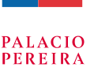

ACERCA DE
Inteligencias Reflexivas es la propuesta curatorial que representa al Pabellón de Chile en la 19° Bienal de Arquitectura de Venecia 2025. En respuesta al llamado internacional “Intelligens. Natural. Artificial. Collective., el proyecto propone un desplazamiento crítico: interrogar el imaginario tecno-optimista y abstracto de la Inteligencia Artificial para situar la mirada en sus condiciones materiales, sus impactos ecológicos y sus urgentes implicancias políticas.
EQUIPO
Curaduría
Serena Dambrosio, Nicolás Díaz Bejarano, Linda Schilling Cuellar
Comisario
Cristobal Molina Baeza
Comité asesor científico: Infraestructuras de IA
Marina Otero Verzier; Evidencia material — Susan Schuppli; Espacios institucionales — Alejandra Celedón Forster
Ayudantes de investigación
Tomás Carbonell Vidal, Francisca Luco, Javier Toledo Rodríguez, Miguel Uribe Rubilar, Luna Valdivia, Matías Valenzuela, Francisca Larraín, José Tomás Labbé, Constanza Durán, Magdalena Bertholet
Diseño de exposición: Estudio Pedro Silva (@___e.p.s)
Pedro Silva, Frank Hernández; Diego Alday; Sebastián Valois Hermosilla
Identidad visual y gráfica de exposición: Gaggero Works (@gaggeroworks)
Constanza Gaggero, Amalia Fernández, Alejandra Peralta
Dirección audiovisual
Jaime San Martín, Rafael Guendelman Hales
Producción arquitectónica en Venecia
Alessandra Dal Mos
Colaboradores
Cristóbal Mallea Fuenzalida, Luna Figueroa Maraboli, Vicente Sierra Drolett, Daniel Aguayo Mozó, Laura Reyes, Nathan Humanante Schatz
Prensa
Constanza Almarza
Impresión 3D: LAT
Laboratorio Arte y Tecnología, Escuela de Arte, Facultad de Artes UC Chile; Laboratorio de Fabricación Digital Fabhaus, Facultad de Arquitectura, Diseño y Estudios Urbanos UC Chile; Escuela de Arquitectura, Universidad Andrés Bello; Facultad de Arquitectura e Ingeniería, Universidad Central; Facultad de Arquitectura, Arte y Diseño, Universidad Diego Portales; Escuela de Arquitectura, Universidad de Las Américas
Organiza:
Ministerio de las Culturas, las Artes y el Patrimonio de Chile, con el apoyo de la Dirección de Asuntos Culturales (DIRAC) del Ministerio de Relaciones Exteriores de Chile y la Embajada de Chile en Italia
VENICE 2025 (LA EXHIBICIÓN)
Registro fotográfico, audiovisual y clippings de medios internacionales y nacionales.
ARCHIVO (BASE DE DATOS)
Research archive, entrevistas, directorio y mapa interactivo de Data Centers.

ACERCA DE
Digital Vértigo es un encuentro internacional e interdisciplinar que reúne a arquitectos, diseñadores, investigadores y teóricos de los estudios de medios para reflexionar críticamente sobre las arquitecturas de la información.
El proyecto funciona como una plataforma pública para interrogar la relación entre las infraestructuras de almacenamiento y los procesos de digitalización del conocimiento, utilizándolos desde una lente strictly material, espacial y ecológica.
EQUIPO
Curaduría
Serena Dambrosio, Nicolás Díaz Bejarano, Linda Schilling Cuellar
Asistentes
Álvaro Andueza, Fabiana Calderón, Tomás Carbonell, Nathan Humanante, Luna Valdivia
Identidad Visual Original (Inteligencias Reflexivas)
Gaggero Works
Adaptación Identidad Visual Digital Vertigo:
Antonieta López
Responsable de prensa
Constanza Almarza
INVITADOS
Charlas
Marina Otero Verzier, Susan Schuppli, Felicity Scott, Cécile Diguet, Mario Santamaría, Cheng-Luen Hsueh, David Capener, Laura Kurgan
Mesas de trabajo:
Matías Bernales, Sebastián Leyton, Francisco Irarrázaval, Félix Rojas, Ignacio Tapia Muñoz, Paz Peña, Rodrigo Vallejos, Dante Orellana, David Jofré Leiva, Francisca Skoknic, Vicente Bardales, Tania Rodríguez, Red Nube Justa, Karina Fernández, Natalia López, Ignacio Silva, Magdalena Calcagni, Cécile Diguet, Bianca Chong, Centro de Inteligencia Territorial, Sebastián Salas, Andrés Contreras, Sebastián Díaz Howard, Alexandra Arancibia
INSTITUCIONES
Auspician
Fondart Nacional, Organización de muestras, ferias y encuentros, Emergentes, folio 834718
Fondo Semilla de Impacto - 2026 del Pulitzer Center


Con el apoyo de
Fondecyt Postdoctorado 2025 ANID, Folio 3250115
Facultad de Arquitectura, Arte, Diseño, Universidad Diego Portales
Biblioteca Nicanor Parra, Universidad Diego Portales
Biblioteca Nacional de Chile
Palacio Pereira



PROGRAMA (CALENDARIO DINÁMICO)
Bloques: Sesiones cerradas, seminarios, visitas guiadas y charlas públicas.
GALERÍA
Fotos de los encuentros en Santiago y las visitas a los archivos en las instituciones.